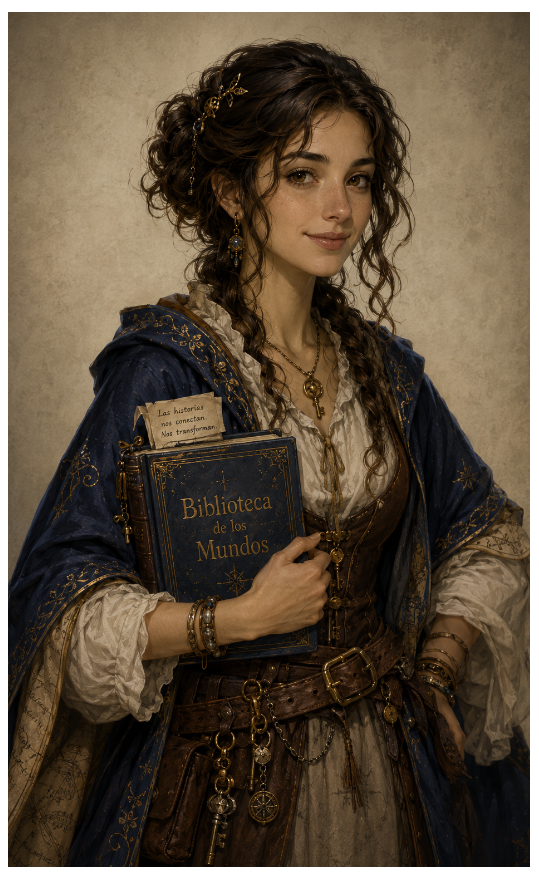

🪶 Propuestas
En este espacio aparecerán las preguntas y los temas de escritura de tu curso.
Por completarUn rincón para escribir, recordar, imaginar y descubrir tu voz. Los textos se realizan a mano en la libreta de clase.

Ariadna te acompaña: Todas las grandes historias comienzan con una palabra. Aquí encontrarás las indicaciones para construir la tuya.
En este espacio aparecerán las preguntas y los temas de escritura de tu curso.
Por completarConsultaremos cuándo se realiza cada actividad y cuál es su fecha de entrega.
Por completarEncontrarás los requisitos, las orientaciones y los criterios para revisar tu trabajo.
Por completarRecuerda: esta página sirve para consultar las consignas. No tienes que escribir ni entregar aquí tus textos: los redactarás en tu libreta física.